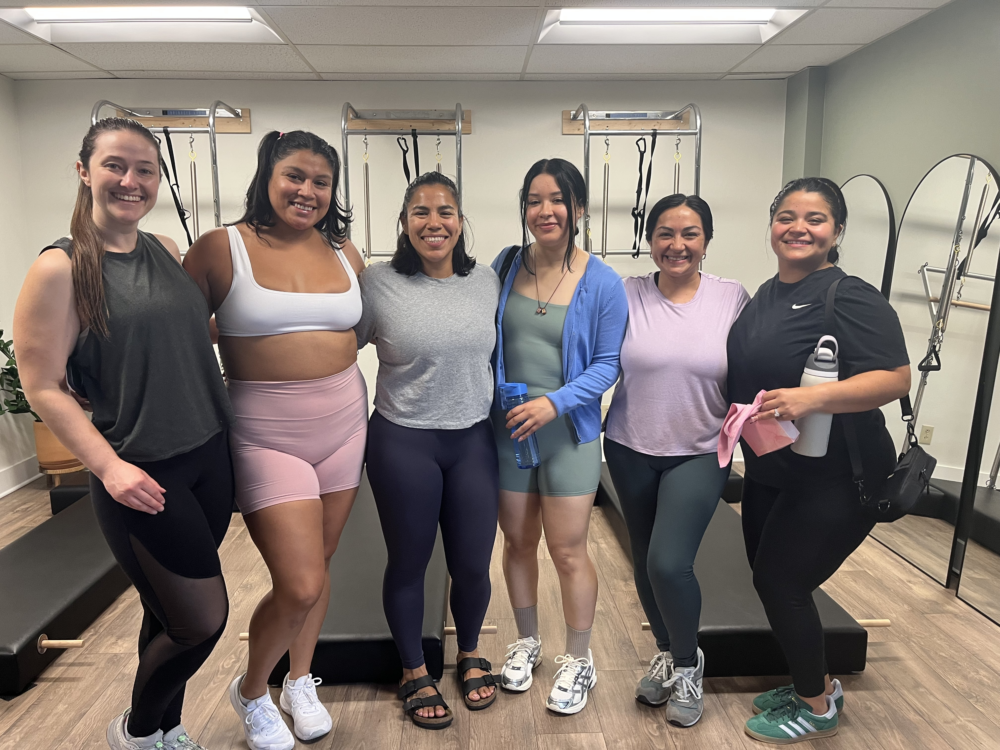

At Florecer Wellness, we believe movement should feel welcoming, accessible, and rooted in community. Through Pilates, we create spaces where people of all backgrounds, experience levels, and identities can move, connect, and grow together. Our classes are designed to help you build strength, confidence, and body awareness in an environment where you feel supported from the moment you walk through the door. Inspired by the meaning of florecer “to bloom” we are committed to cultivating a community where everyone feels seen, valued, and encouraged to show up exactly as they are.

Join us for beginner-friendly Classical Pilates classes designed to help you build strength, confidence, and connection. Move alongside others in a welcoming environment where community comes first.

Looking for a more personalized experience? Private sessions can be tailored for individuals, small groups, celebrations, wellness gatherings, or special events.

Bring movement to your community. We partner with local businesses, organizations, and events to create meaningful wellness experiences that bring people together through movement, culture, and connection.

Hi, I'm Anna, Founder of Florecer Wellness. As a first-generation Latina with Cuban and Mexican roots, community has always been deeply important to me. Growing up, I often searched for spaces where I felt represented, connected, and truly welcomed. When I discovered Pilates, I found a movement practice that transformed the way I felt in my body. But I didn't always see people who looked like me in those spaces. Florecer Wellness was created to change that. My goal is to make Pilates approachable, inclusive, and community-centered while celebrating the beauty of cultura and connection. I believe movement should be for everyone, regardless of experience, background, age, or fitness level. Through every class, collaboration, and event, I hope to create spaces where people can move with confidence, build meaningful connections, and feel a sense of belonging. Because wellness isn't just about how we move, it's about the communities that help us flourish.
Todos son bienvenidos. Everyone is welcome here.